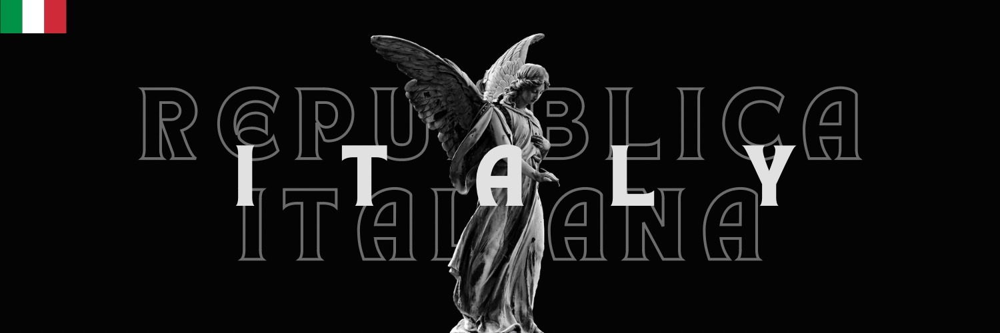
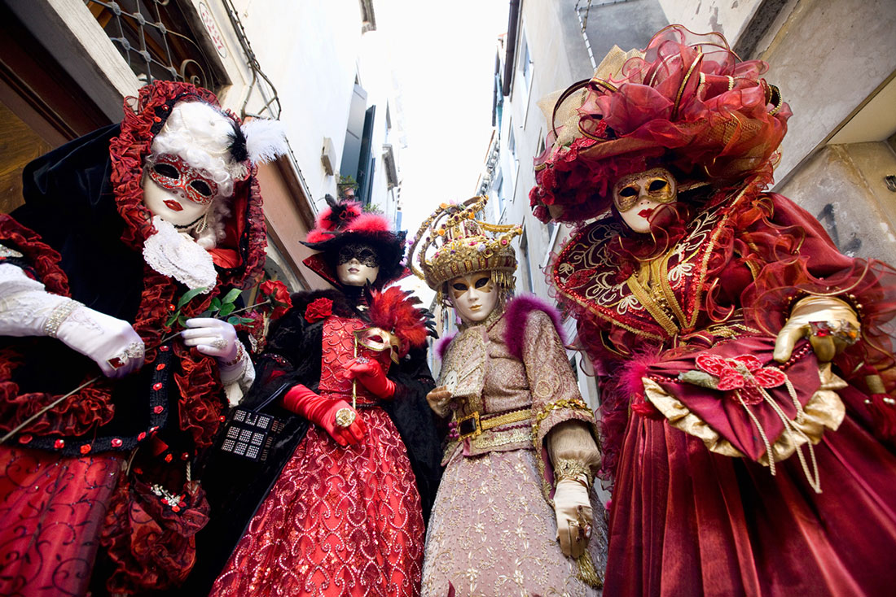
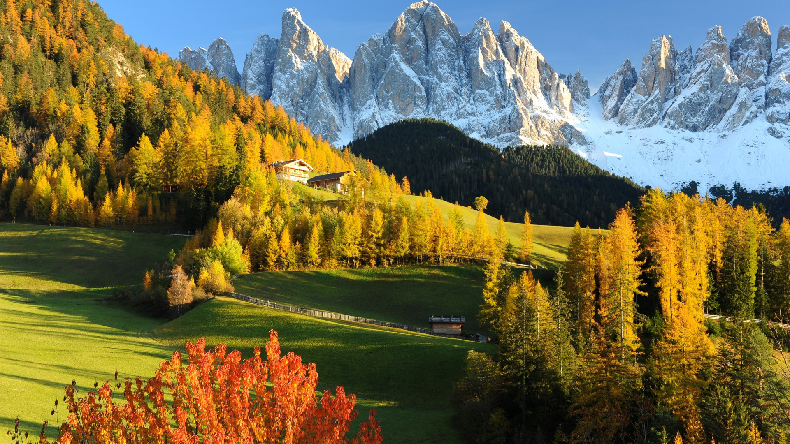
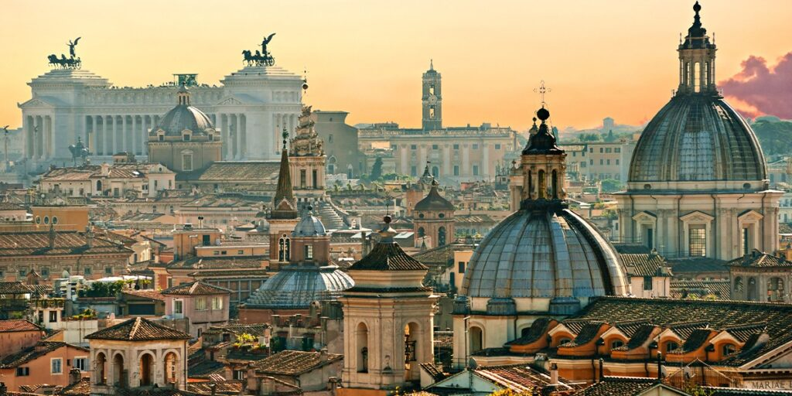

อิตาลี ||
ประวัติประเทศอิตาลี ||
อาหารที่ชอบ ||
สถานที่ท่องเที่ยวในอิตาลี ||
วัฒนธรรมชองอิตาลี
อิตาลีเป็นประเทศที่อุดมสมบูรณ์ด้วยวัฒนธรรมและอารยธรรมที่มีความหลากหลายและน่าตื่นตาตื่นใจมากมาย วัฒนธรรม ประเทศ อิตาลี อาหารอิตาเลี่ยน
วัฒนธรรมของประเทศอิตาลีเป็นหนึ่งในวัฒนธรรมที่มีความเป็นเอกลักษณ์และเหนือชั้นทั้งทางศิลปะ อาหาร สถาปัตยกรรม และวิถีชีวิต ไม่ว่าจะเป็นความเชื่อทางศาสนา
ประเพณี หรือความเจริญของวรรณกรรม ร้านอาหารอิตาเลี่ยน ทองหล่อ มีความหลากหลายและความคล้ายคลึงกับประเทศนี้อย่างแพร่หลายทั้งในปัจจุบันและอดีต วัฒนธรรมของประเทศอิตาลีมีความเป็นเอกลักษณ์ที่ยาวนานและเป็นผลมาจากประวัติศาสตร์ที่ยาวนานของ ชาวอิตาลี นักเขียนชื่อดังเช่น Dante Alighieri และ Petrarch เกิดขึ้นในยุคกลางเศรษฐกิจยุคหนึ่งที่ชื่นชอบความรู้และศิลปวิทยา วัฒนธรรมการแสดงละครของอิตาลียังเป็นที่นับถือในระดับโลกด้วยการแสดงละครโอเปร่า ที่มีลักษณะเฉพาะที่แสดงความรื่นรมย์และความเข้าใจในความเป็นมนุษย์
ประเทศ อิตาลี เป็นแผ่นดินที่มี ประวัติ ประเทศ อิตาลี ที่ยาวนาน เมืองโรม ในสมัยโบราณเป็นแหล่งก่อตั้งอิงค์สำคัญของอิตาลีโบราณ ซึ่งเป็นจุดเริ่มต้นของสังคมและวัฒนธรรมที่เกิดขึ้นในบริเวณนี้ อีกทั้งยังเป็นแหล่งก่อตั้งอาณาจักรโรมันที่แผ่ขยายอิทธิพลไปทั่วยุโรปตลอดกาล วัฒนธรรม ประเทศ อิตาลี เมื่อเราพูดถึงประเทศอิตาลี เราไม่สามารถไม่พูดถึงความหลากหลายทางวัฒนธรรมและประวัติศาสตร์ที่เชื่อมโยงกับโลกโบราณได้
อิตาลีเป็นแผ่นดินที่เป็นแหล่งกำเนิดของอัตตานิยมโรมันโบราณที่ได้สร้างเสริมสร้างพัฒนามาจนถึงยุคสมัยสมัยใหม่ นอกจากนี้ยังเป็นแผ่นดินที่เป็นที่กำเนิดของศิลปะใหม่ในยุคประวัติศาสตร์ที่รู้จักกันในนามของ Renaissance หรือ ยุคฟื้นฟูศิลปะ ซึ่งมีผลกระทบต่อวัฒนธรรมทั่วโลกมากมาย
ประเทศอิตาลีมีความหลากหลายและเป็นเอกลักษณ์ วัฒนธรรม ประเทศ อิตาลี เนื่องจากประวัติศาสตร์และผลสัมพันธ์กับชาติและวัฒนธรรมอื่น ๆ ที่เคยมีการแลกเปลี่ยนเช่นกัน จากศิลปะสมัยโบราณที่สืบทอดจากกรีกโบราณ ไปจนถึงสมัยประวัติศาสตร์ที่เห็นได้จากสถาปัตยกรรมโรมาน และผลกระทบจากอิทธิพลของศิลปะและวัฒนธรรมของสมัยกลางเฉียงของยุโรป อาหารอิตาลีเป็นที่รู้จักในระดับโลกด้วยรสชาติที่อร่อยและส่วนผสมที่สดใส พาสต้าและพิซซ่าเป็นอาหารที่เป็นเอกลักษณ์ของประเทศนี้ นอกจากนี้ อิตาลียังมีอาหารทะเลที่หลากหลายและชาวบ้านชอบใช้วัตถุดิบสดในการปรุงอาหารรสชาติหอมหวาน

ภูมิอากาศในอิตาลี
ประเทศอิตาลีมีลักษณะอากาศหลากหลายแบบ และอาจมีความแตกต่างจากภูมิอากาศแบบเมดิเตอร์เรเนียนตามลักษณะพื้นที่ตั้ง พื้นที่ส่วนใหญ่ทางตอนเหนือของประเทศ เช่นเมืองตูริน มิลาน และโบโลญญา มีลักษณะแบบอากาศภาคพื้นทวีปที่ค่อนข้างร้อนชึ้น (การแบ่งเขตภูมิอากาศแบบเคิปเปน: Cfa) พื้นที่ชายฝั่งติดกับทะเลของแคว้นลีกูเรียและส่วนใหญ่ของคาบสมุทรที่อยู่ใต้ลงไปจากฟลอเรนซ์เป็นภูมิอากาศแบบเมดิเตอร์เรเนียน (การแบ่งเขตภูมิอากาศแบบเคิปเปน: Csa) คือมีอากาศอบอุ่นตลอดทั้งปี โดยมีลมจากแอฟริกาพัดเอาความร้อนและความชี้นเข้ามา[41] พื้นที่ชายฝั่งของคาบสมุทรอิตาลีสามารถมีความแตกต่างกันได้มากจากระดับความสูงของภูเขาและหุบเขา โดยเฉพาะเมื่อถึงฤดูหนาวในที่สูงก็จะมีอากาศหนาว ชื้น และมักจะมีหิมะตก ภูมิภาคริมทะเลมีอากาศไม่รุนแรงในฤดูหนาว อากาศอุ่นและมักจะแห้งในฤดูร้อน และพื้นที่ต่ำกลางหุบเขามีอากาศค่อนข้างร้อนในฤดูร้อน

เมืองหลวง : โรม
โรม (อังกฤษ: Rome) หรือชื่อในภาษาอิตาลีและละตินคือ โรมา(อิตาลีและละติน: Roma เป็นเมืองหลวงและเมืองที่ใหญ่ที่สุดของแคว้นลัตซีโยและประเทศอิตาลี ตั้งอยู่ทางตอนกลางของประเทศ ในเขตตัวเมืองมีประชากรอาศัยอยู่ประมาณ 2.5 ล้านคน ถ้ารวมเมืองโดยรอบจะมีประมาณ 4.3 ล้านคน โดยมีจำนวนประชากรใกล้เคียงกับมิลานและนาโปลี
